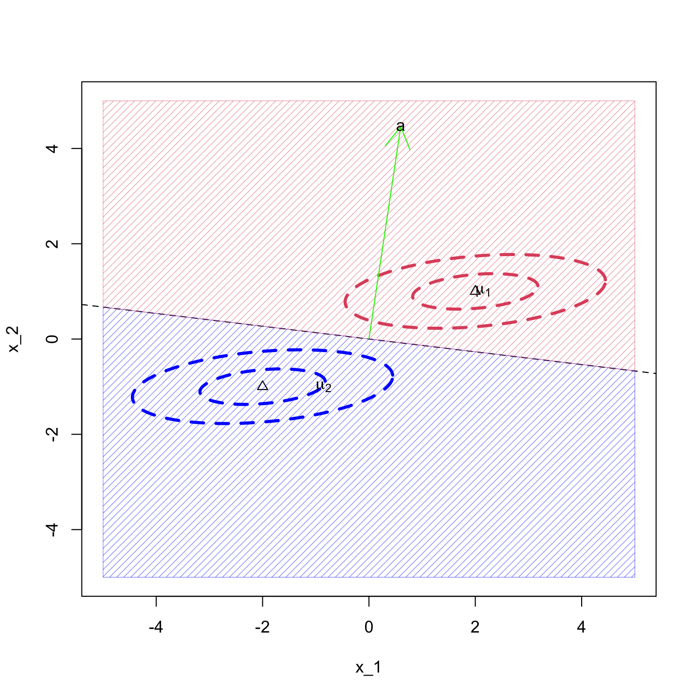

8.1 Maximum likelihood (ML) discriminant rule
A popular way to develop a discriminant rule is to start by assuming (or estimating) a different distribution for \(\mathbf x\in \mathbb R^p\) for each population. For example, suppose that the observations in population \(j\) have a distribution with pdf \(f_j(\mathbf x)\), for \(j=1,\ldots , g\).
We will begin by supposing the different population distributions \(f_1(\mathbf x), \ldots, f_g(\mathbf x)\) are known, and in particular, that they are multivariate normal distributions.
Example 8.2 Consider the univariate case with \(g=2\) where \(\Pi_1\) is the \(N(\mu_1,\sigma_1^2)\) distribution and \(\Pi_2\) is the \(N(\mu_2,\sigma_2^2)\) distribution. The ML discriminant rule allocates \(x\) to \(\Pi_1\) if and only if \[ f_1(x) > f_2(x) , \] which is equivalent to \[ \frac{1}{(2\pi\sigma_1^2)^{1/2}} \exp \left(-\frac{1}{2\sigma_1^2} (x-\mu_1)^2 \right) > \frac{1}{(2\pi\sigma_2^2)^{1/2}} \exp \left(-\frac{1}{2\sigma_2^2} (x-\mu_2)^2 \right). \] Collecting terms together on the left hand side (LHS) gives \[\begin{eqnarray} && \qquad \frac{\sigma_2}{\sigma_1} \exp \left(-\frac{1}{2\sigma_1^2} (x - \mu_1)^2 +\frac{1}{2\sigma_2^2} (x - \mu_2)^2 \right)> 1 \\ &\iff& \qquad \log \left(\frac{\sigma_2}{\sigma_1} \right)-\frac{1}{2\sigma_1^2} (x - \mu_1)^2 + \frac{1}{2\sigma_2^2} (x - \mu_2)^2 > 0 \\ & \iff & \qquad x^2 \left(\frac{1}{\sigma_2^2} - \frac{1}{\sigma_1^2} \right) + x \left(\frac{2 \mu_1}{\sigma_1^2} - \frac{2 \mu_2}{\sigma_2^2} \right)+ \frac{\mu_2^2}{\sigma_2^2} - \frac{\mu_1^2}{\sigma_1^2} + 2 \log \frac{\sigma_2}{\sigma_1} > 0. \tag{8.2} \end{eqnarray}\] Suppose, for example, that \(\mu_1 = \sigma_1 = 1\) and \(\mu_2 = \sigma_2 = 2\), then this reduces to the quadratic expression \[ -\frac{3}{4}x^2 + x + 2 \log 2 > 0.\] Suppose that our new observation is \(x=0\), say. Then the LHS is \(2 \log 2\) which is greater than zero and so we would allocate \(x\) to population 1.
Using the quadratic equation formula we find that \(f_1(x)=f_2(x)\) when \[x = \frac{-1 \pm \sqrt{1+6 \log 2}}{-3/2} = \frac{2}{3} \pm \frac{2}{3} \sqrt{1 + 6 \log 2},\] i.e. at \(x = -0.85\) and \(x = 2.18\). Our discriminant rule is thus to allocate \(x\) to \(\Pi_1\) if \(-0.85 < x < 2.18\) and to allocate it to \(\Pi_2\) otherwise. This is illustrated in Figure 8.2.

Figure 8.2: Discriminant rule for the two Gaussians example.
Note that this has not resulted in connected convex discriminant regions \(\mathcal{R}_i\). This is because our discriminant functions were not linear functions of \(\mathbf x\) - thus we did not find a linear discriminant rule.
Note also that if \(\sigma_1=\sigma_2\) then the \(x^2\) term in Equation (8.2) cancels, and we are left with a linear discriminant rule. For example, if \(\sigma_2=1\) with the other parameters as before, then we classify \(x\) to population 1 if
\[ 2x \left(\mu_1 - \mu_2 \right)+ \mu_2^2 - \mu_1^2 = -2x+3 > 0. \] i.e., if \(x<\frac{3}{2}\). In this case, we do get discriminant regions \(\mathcal{R}_j\) which are connected and convex.
Figure 8.3: Discriminant rule for the two Gaussians example when sigma_2=1
8.1.1 Multivariate normal populations
Now we consider the case of \(g\) multivariate normal populations. We shall assume that for population \(k\) \[\mathbf x\sim N_p({\boldsymbol{\mu}}_k, \boldsymbol{\Sigma})\] i.e., we allow the mean of each population to vary, but have assumed a common covariance matrix between groups. We call the \({\boldsymbol{\mu}}_k\) the population means or centroids.
Proposition 8.2 If cases in population \(\Pi_k\) have a \(N_p({\boldsymbol{\mu}}_k,\boldsymbol{\Sigma})\) distribution, then the ML discriminant rule is \[d(\mathbf x)= \arg\min_{k}(\mathbf x-{\boldsymbol{\mu}}_k)^\top \boldsymbol{\Sigma}^{-1} (\mathbf x-{\boldsymbol{\mu}}_k).\]
Equivalently, if \(\delta_k(\mathbf x) = 2{\boldsymbol{\mu}}_k^\top \boldsymbol{\Sigma}^{-1} \mathbf x- {\boldsymbol{\mu}}_k^\top \Sigma^{-1} {\boldsymbol{\mu}}_k\). Then \[d(\mathbf x) = \arg \max \delta_k(\mathbf x).\] I.e. this is a linear discriminant rule.Proof. The \(k\)th likelihood is \[\begin{equation} f_k(\mathbf x) = | 2 \pi \boldsymbol{\Sigma}|^{-1/2} \exp \left(-\frac{1}{2} (\mathbf x- {\boldsymbol{\mu}}_k)^\top \boldsymbol{\Sigma}^{-1} (\mathbf x- {\boldsymbol{\mu}}_k) \right).\tag{8.3} \end{equation}\] This is maximised when \[(\mathbf x- {\boldsymbol{\mu}}_k)^\top \boldsymbol{\Sigma}^{-1} (\mathbf x- {\boldsymbol{\mu}}_k)\] is minimised, due to the minus sign in the exponent.
\[\begin{align*} (\mathbf x-{\boldsymbol{\mu}}_k)^\top \boldsymbol{\Sigma}^{-1} (\mathbf x-{\boldsymbol{\mu}}_k) &= \mathbf x^\top \boldsymbol{\Sigma}^{-1}\mathbf x -2{\boldsymbol{\mu}}_k^\top \boldsymbol{\Sigma}^{-1}\mathbf x+{\boldsymbol{\mu}}_k^\top \boldsymbol{\Sigma}^{-1}{\boldsymbol{\mu}}_k\\ &= \mathbf x^\top \boldsymbol{\Sigma}^{-1}\mathbf x-\delta_k(\mathbf x) \end{align*}\] Thus, \[\arg \min_k (\mathbf x-{\boldsymbol{\mu}}_k)^\top \boldsymbol{\Sigma}^{-1} (\mathbf x-{\boldsymbol{\mu}}_k) = \arg\max_k \delta_k(\mathbf x)\] as \(\mathbf x^\top \boldsymbol{\Sigma}\mathbf x\) does not depend on \(k\).
8.1.2 The sample ML discriminant rule
To use the ML discriminant rule, we need to know the model parameters for each group, \({\boldsymbol{\mu}}_k\), as well as the common covariance matrix \(\boldsymbol{\Sigma}\). We will usually not know these parameters, and instead must estimate them from training data. We then substitute these estimates into the discriminant rule. Training data typically consists of samples \(\mathbf x_{1,k}, \ldots, \mathbf x_{n_k,k}\) known to be from population \(\Pi_k\), where \(n_k\) is the number of observations from population \(\Pi_k\).
We estimate the unknown population means by the sample mean for each population \[\hat{{\boldsymbol{\mu}}}_k =\frac{1}{n_k} \sum_{i=1}^{n_k} \mathbf x_{i,k}.\]
To estimate the shared covariance matrix, \(\boldsymbol{\Sigma}\), first calculate the sample covariance matrix for the \(k\)th group: \[\mathbf S_j=\frac{1}{n_j-1}\sum_{i=1}^{n_j} (\mathbf x_{i,j}-\hat{{\boldsymbol{\mu}}}_j)(\mathbf x_{i,j}-\hat{{\boldsymbol{\mu}}}_j)^\top\]
Then \[\begin{equation} \widehat{\boldsymbol{\Sigma}} = \frac{1}{n-g} \sum_{k=1}^g n_k \mathbf S_k \tag{8.4} \end{equation}\] is an unbiased estimate of \(\boldsymbol{\Sigma}\) where \(n = n_1 + n_2 + \ldots + n_g\). Note that this is not the same as the total covariance matrix (i.e. ignoring the class labels).
The sample ML discriminant rule is then defined by substituting these estimates into 8.2.
8.1.3 Two populations
Proof. From Proposition 8.2 we know that we classify to population 1 if and only if \[\delta_1(\mathbf x)>\delta_2(\mathbf x),\] i.e., if \[2{\boldsymbol{\mu}}_1^\top \boldsymbol{\Sigma}^{-1} \mathbf x-{\boldsymbol{\mu}}_1\boldsymbol{\Sigma}^{-1}{\boldsymbol{\mu}}_1> 2{\boldsymbol{\mu}}_2^\top \boldsymbol{\Sigma}^{-1} \mathbf x-{\boldsymbol{\mu}}_2 \boldsymbol{\Sigma}^{-1}{\boldsymbol{\mu}}_2\] Rearranging we see this is true if and only if \[({\boldsymbol{\mu}}_1-{\boldsymbol{\mu}}_2)^\top \boldsymbol{\Sigma}^{-1} \mathbf x> \frac{1}{2}({\boldsymbol{\mu}}_1-{\boldsymbol{\mu}}_2)^\top\boldsymbol{\Sigma}^{-1}({\boldsymbol{\mu}}_1+{\boldsymbol{\mu}}_2).\] Using the expressions for \(\mathbf a\) and \(\mathbf h\) gives \[\mathbf a^\top \mathbf x> \mathbf a^\top \mathbf h\] from which the desired result follows.
If we think about the situation where \(\boldsymbol{\Sigma}= \mathbf I\), then we can make sense of this rule geometrically. If the variance of the two populations is the identity matrix, then we can simply classify to the nearest population mean/centroid, and the decision boundary is thus the perpendicular bisector of the two centroids. Moreover,
\(\mathbf a= {\boldsymbol{\mu}}_1-{\boldsymbol{\mu}}_2\) is the vector between the two population centroids, and thus will be perpendicular to the decision boundary.
\(\mathbf h= \frac{1}{2}({\boldsymbol{\mu}}_1+{\boldsymbol{\mu}}_2)\) is the midpoint of the two population centroids, and thus \(\mathbf h\) will lie on the decision boundary.
An equation for the decision boundary is \(\mathbf a^\top (\mathbf x- \mathbf h)=0\).
For a general point \(\mathbf x\in \mathbb{R}^p\), the vector \(\mathbf x-\mathbf h\) is a vector from the decision boundary (i.e. from \(\mathbf h\)) to \(\mathbf x\).
Thinking of the scalar product, we can see that \(\mathbf a^\top (\mathbf x- \mathbf h)\) is proportional to the cosine of the angle between \(\mathbf a\) and \(\mathbf x-\mathbf h\). The point \(\mathbf x\) will be closer to \({\boldsymbol{\mu}}_1\) than \({\boldsymbol{\mu}}_2\) if the angle between \(\mathbf a\) and \(\mathbf x-\mathbf h\) is between \(-90^\circ\) and \(90^\circ\), or equivalently, if the cosine of the angle is greater than 0.
Thus we classify \(\mathbf x\) to population 1 if \(\mathbf a^\top (\mathbf x- \mathbf h)>0\), and to population 2 if \(\mathbf a^\top (\mathbf x- \mathbf h)<0\).
This situation is illustrated in Figure 8.4.
If we have more than \(2\) populations, then for \(\boldsymbol{\Sigma}=\mathbf I\), the decision boundaries are the perpendicular bisectors between the population centroids (the \({\boldsymbol{\mu}}_i\)) and we simply classify to the nearest centroid.
When \(\boldsymbol{\Sigma}\not =\mathbf I\), we think of \(\boldsymbol{\Sigma}\) as distorting space. Instead of measuring distance using the Euclidean distance, we instead adjust distances to account for \(\boldsymbol{\Sigma}\). The decision boundaries are then no longer the perpendicular bisectors of the centroids.
Example 2
Consider the bivariate case (\(p=2\)) with \(g=2\) groups, where \(\Pi_1\) is the \(N_2({\boldsymbol{\mu}}_1,\mathbf I_2)\) distribution and \(\Pi_2\) is the \(N_2({\boldsymbol{\mu}}_2,\mathbf I_2)\) distribution. Suppose \({\boldsymbol{\mu}}_1 = \begin{pmatrix} c \\ 0 \end{pmatrix}\) and \({\boldsymbol{\mu}}_2 = \begin{pmatrix} -c \\ 0 \end{pmatrix}\) for some constant \(c>0\). Here, \(\mathbf a= \boldsymbol{\Sigma}^{-1} ({\boldsymbol{\mu}}_1 - {\boldsymbol{\mu}}_2) = \begin{pmatrix} 2c \\ 0 \end{pmatrix}\) and \(\mathbf h= \frac{1}{2}( {\boldsymbol{\mu}}_1 + {\boldsymbol{\mu}}_2 ) = \begin{pmatrix} 0 \\ 0 \end{pmatrix}\).
The ML discriminant rule allocates \(\mathbf x\) to \(\Pi_1\) if \(\mathbf a^\top (\mathbf x- \mathbf h) = \mathbf a^\top \mathbf x> 0\). If we write \(\mathbf x= \begin{pmatrix} x_1 \\ x_2 \end{pmatrix}\) then \(\mathbf a^\top \mathbf x= 2cx_1\), which is greater than zero if \(x_1 > 0\). Hence we allocate \(\mathbf x\) to \(\Pi_1\) if \(x_1 > 0\) and allocate \(\mathbf x\) to \(\Pi_2\) if \(x_1 \leq 0\).

Figure 8.4: LDA when the covariance matrix is the identity
Example 3
Let’s now generalise the previous example, making no assumptions about \(\boldsymbol{\Sigma}\), but still assuming \({\boldsymbol{\mu}}_1=-{\boldsymbol{\mu}}_2\). If we write \(\mathbf a= \begin{pmatrix} a_1 \\ a_2 \end{pmatrix}\) and \(\mathbf h= \frac{1}{2}( {\boldsymbol{\mu}}_1 + {\boldsymbol{\mu}}_2 ) = \boldsymbol 0\). Then the ML discriminant rule allocates \(\mathbf x\) to \(\Pi_1\) if \(\mathbf a^\top \mathbf x> 0\). If we write \(\mathbf x= \begin{pmatrix} x \\ y \end{pmatrix}\) then the boundary separating \(\mathcal R_1\) and \(\mathcal R_2\) is given by \(\mathbf a^\top \mathbf x= \begin{pmatrix} a_1 & a_2 \end{pmatrix} \begin{pmatrix} x \\ y \end{pmatrix} = a_1 x + a_2 y = 0\), i.e. \(y = -\frac{a_1}{a_2} x\). This is a straight line through the origin with gradient \(-a_1/a_2\).
For \({\boldsymbol{\mu}}_1 =\begin{pmatrix}1 \\1 \\\end{pmatrix}\) and \(\boldsymbol{\Sigma}= \begin{pmatrix}1&-0.9 \\-0.9&1 \\\end{pmatrix}\) we find \(\mathbf a= \begin{pmatrix}20 \\20 \\\end{pmatrix}\), which gives the line \(y = -1 x\).

If the variance of the \(y\) component is very small compared to the variance of the \(x\) component, then we begin to classify solely on the basis of \(y\). For example, if \({\boldsymbol{\mu}}_1 =\begin{pmatrix}2 \\1 \\\end{pmatrix}\) and \(\boldsymbol{\Sigma}= \begin{pmatrix}1&0.09 \\0.09&0.1 \\\end{pmatrix}\) we find \(\mathbf a= \begin{pmatrix}2.39 \\17.8 \\\end{pmatrix}\), which gives the line \(y = -0.13 x\). I.e., a line that is getting close to being horizontal.

8.1.4 More than two populations
When \(g>2\), the boundaries for the ML rule will be piece-wise linear. In the exercises you will look at an example with 3 populations in two dimensions.